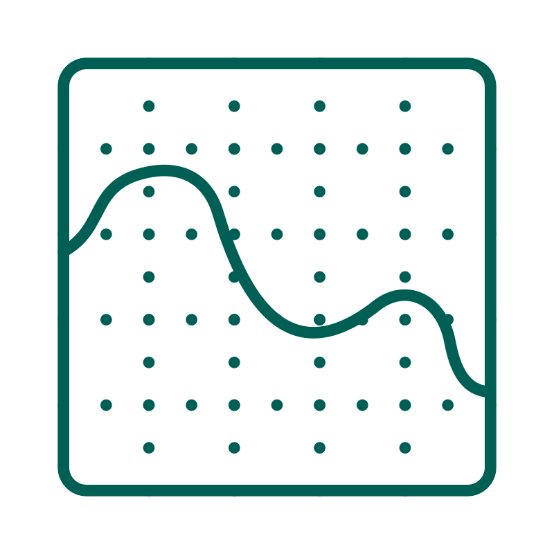
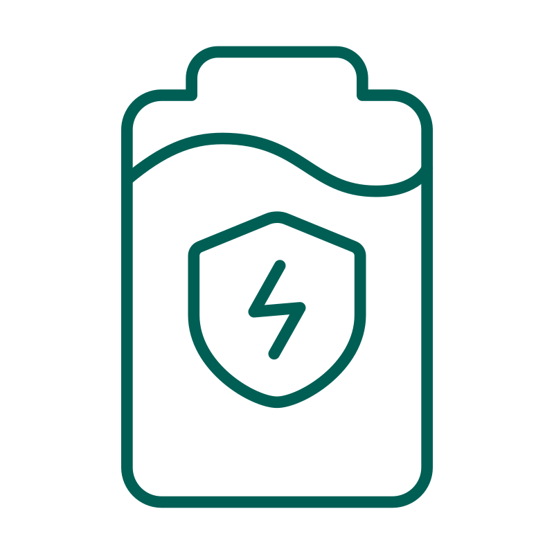
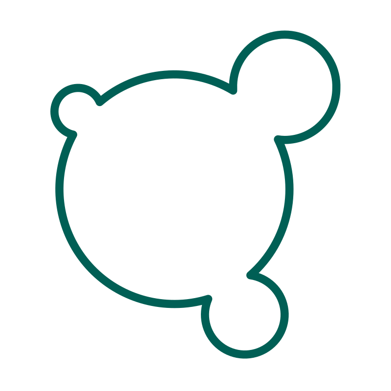
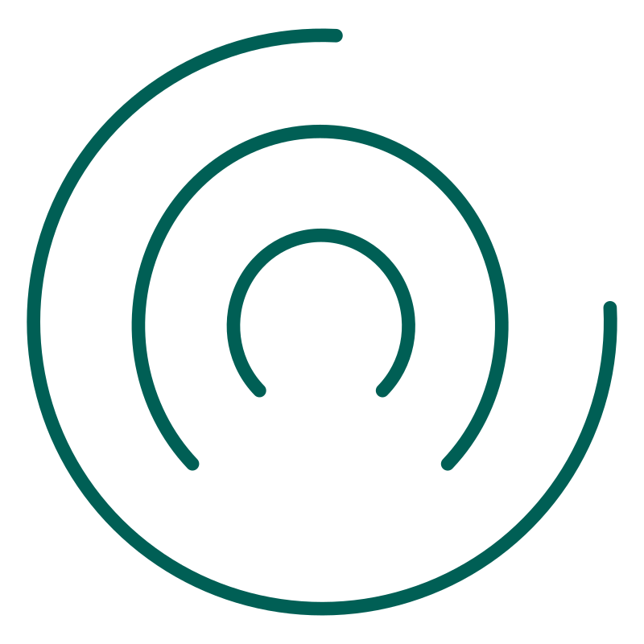
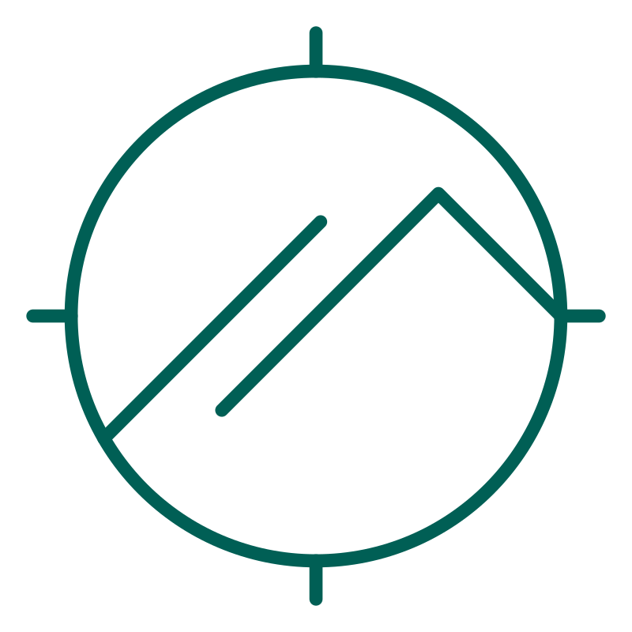
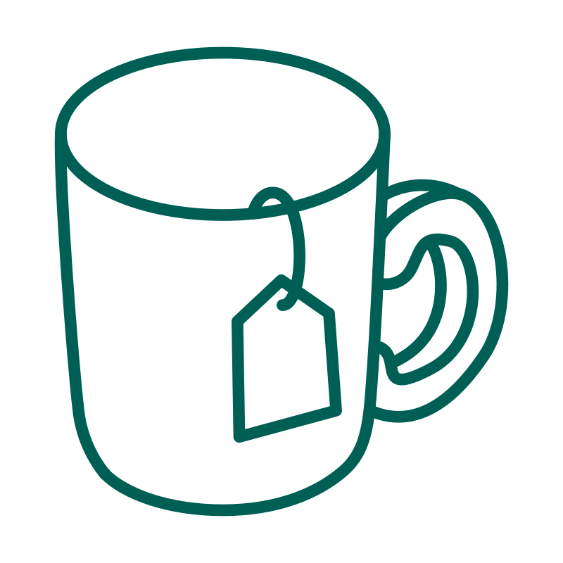

vert-suite autonomously co-optimises CPU and GPU power on bare-metal servers and in the cloud (validated on AWS EC2), achieving energy savings without changes to your software or hardware. Every watt saved is either cash back or extra capacity: fit around a third more GPUs into the power budget you already have.
Bare-metal results are measured at the server wall-socket with a UNI-T UTE9811+ power analyser. Cloud results (AWS EC2) come from GPU power readings via nvidia-smi and cover the GPUs only.
On cutting-edge Blackwell GPUs, each generated token carries a significant energy cost. With millions of tokens processed daily, that adds up fast. And without active optimisation, both CPU and GPU hardware are left running at full speed regardless of actual workload demand. Below: three production models on two GPUs, at 30 concurrent sessions per GPU, with and without vert-suite.
2× RTX Pro 6000 Blackwell Workstation Edition with an Intel Xeon w7-3455 host, vLLM 0.26. Whole-server energy per generated token, without vert-suite (SotA) and under the Base and Eager profiles.
2× RTX Pro 6000 Blackwell Server Edition, vLLM 0.26. On AWS only the GPUs are optimised and measured (nvidia-smi); host and cooling savings are not included.
In an earlier study on a single GPU, vLLM serving Gemma 4 31B was targeted with 1–60 concurrent requests.† Every data point is the average of 20 independent runs, and energy per token fell by 27–33%. vert-suite operates under a self-imposed SLA of no more than 10% throughput reduction vs. the unmanaged baseline.
* Model cards: vLLM 0.26, open-ended coding prompts, max_tokens 500; figures are means, percentages against the SotA default on identical hardware (AWS: means over 100 runs). Bare metal: whole-server energy at the wall-socket, attributed per GPU. AWS: GPU-only energy via nvidia-smi. Laguna uses tensor parallelism over a non-NVLink interconnect, so vert-suite deliberately leaves the host CPU at its default setting.
† Scaling chart test system: NVIDIA RTX Pro 6000 Blackwell (96 GB VRAM), 24-core workstation, 128 GB RAM, 2,050 W PSU; all Watt-second readings at the server wall-socket.
Results generated with vLLM version 0.20.1 (CUDA 13.0), request's max_tokens set to 500 to prevent queuing, thus focusing on the specifics of the GPU scaling behaviour.
A production-ready software platform for autonomous GPU/CPU efficiency orchestration. It is inference engine agnostic and needs no hardware changes, application changes or manual tuning.

Autonomous bare-metal GPU and CPU management for AI/LLM workloads. Empirically validated energy savings of over 30% per token, with no changes to your application or inference stack.

Specify your maximum acceptable throughput reduction. vert-suite automatically scans the GPU/CPU operating envelope and locks in the profile delivering the deepest energy savings within your constraint.

Reduce OpEx, extend platform lifespan, and lower your infrastructure's carbon footprint, without replacing or upgrading hardware.

Leverage eBPF for deep system observability with minimal operational disruption, complemented by physical out-of-band telemetry for independent power validation.

Least-privilege agents, just-in-time capabilities, and mTLS-secured control-plane traffic. Transparent telemetry with out-of-band validation for full auditability.

Inference engine agnostic: validated on vLLM and llama.cpp, and compatible with other leading engines. One inclusive library, cross-platform, cross-Linux/K8S distribution, deployable in minutes with no operators, scheduler extensions, or YAML modifications.
Tools that tune hardware settings usually run with permanent root access to the kernel, drivers and hardware. vert-suite runs its everyday components unprivileged and grants elevated access only briefly, for a fixed set of tasks.
vert-suite is built on a strict principle of minimal authority. Instead of deploying a privileged monolith, the architecture is physically split: a standard unprivileged worker that requests just-in-time access only when needed, and only for the exact duration required.
Public key at a terminal: signature verification before any agent is admitted.
Main agent operates as a standard worker within an unprivileged boundary; CAP_SYS_RAWIO and CAP_SYS_ADMIN never granted permanently.
A Security Escort briefly unlocks the required resource, completes the exact task, and immediately relocks, leaving no standing privileges.
All control-plane traffic is encrypted via mTLS tunnels, with no plaintext communication between components.
Digital identity verification prevents any component from operating outside its authorised scope.
No YAML changes, no Kubernetes operators, no code modifications to your inference stack.
Tell vert-suite your maximum acceptable throughput reduction. It autonomously scans the full GPU/CPU operating envelope.
Real-time CPU/GPU co-optimisation locks in the deepest energy savings within your constraint.
vert-suite does not offer a fixed menu of profiles. It offers a continuous spectrum. Simply tell the software the maximum throughput reduction you can accept (say, no more than 5% or 10%) and it automatically identifies the optimal GPU/CPU operational mode to deliver the deepest possible energy savings within that constraint.
Two benchmarked profiles; any point on the spectrum is achievable
Keeps throughput within a few percent of baseline. Measured cost across three models on bare metal and AWS: 2–6% of tokens per second.
A slightly larger throughput budget unlocks markedly deeper reductions. Measured cost: 5–11% of tokens per second.
Ranges span Gemma 4 31B, Qwen 3.6 27B and Laguna S 2.1 NVFP4 at 30 concurrent sessions per GPU, vLLM 0.26. Looser constraints push savings further (see the single-GPU llama.cpp benchmarks below).
Multi-GPU vLLM benchmarks on bare metal and AWS EC2, plus single-GPU llama.cpp benchmarks across five open-weight models. Every result is compared against an unoptimised SotA baseline on identical hardware.
2× RTX Pro 6000 Blackwell at 30 concurrent sessions per GPU. Annual energy is what a GPU draws when left running for a year, including its share of the host CPU on bare metal.
* Bare metal: 2× RTX Pro 6000 Blackwell Workstation Edition, Intel Xeon w7-3455; whole-server energy at the wall-socket, attributed per GPU. AWS: g7e.12xlarge, 2× RTX Pro 6000 Blackwell Server Edition; GPU-only energy via nvidia-smi, excluding host and cooling. On Laguna (tensor parallelism without NVLink) the host CPU is deliberately left at its default setting.
* All Watt-second readings measured at the server wall-socket on a single NVIDIA RTX Pro 6000 Blackwell GPU server.
| Model | Platform | Profile | Energy Saved / yr | Energy / GPU / yr | kWh Saved / yr | TPS Δ |
|---|---|---|---|---|---|---|
| Gemma 4 31B | Bare metal (CPU+GPU) | Base | −25.11% | 5,186 kWh | 1,739 kWh | −2.66% |
| Gemma 4 31B | Bare metal (CPU+GPU) | Eager | −39.17% | 4,213 kWh | 2,712 kWh | −10.76% |
| Gemma 4 31B | AWS EC2 (GPU only) | Base | −23.64% | 2,818 kWh | 872 kWh | −3.21% |
| Gemma 4 31B | AWS EC2 (GPU only) | Eager | −28.34% | 2,645 kWh | 1,046 kWh | −5.12% |
| Qwen 3.6 27B | Bare metal (CPU+GPU) | Base | −28.37% | 4,953 kWh | 1,962 kWh | −2.18% |
| Qwen 3.6 27B | Bare metal (CPU+GPU) | Eager | −38.33% | 4,264 kWh | 2,651 kWh | −9.41% |
| Qwen 3.6 27B | AWS EC2 (GPU only) | Base | −23.24% | 2,763 kWh | 836 kWh | −2.60% |
| Qwen 3.6 27B | AWS EC2 (GPU only) | Eager | −28.59% | 2,570 kWh | 1,029 kWh | −4.64% |
| Laguna S 2.1 NVFP4 (DFlash) | Bare metal (CPU+GPU) | Base | −22.21% | 5,805 kWh | 1,657 kWh | −5.90% |
| Laguna S 2.1 NVFP4 (DFlash) | Bare metal (CPU+GPU) | Eager | −25.35% | 5,571 kWh | 1,892 kWh | −8.28% |
| Laguna S 2.1 NVFP4 (DFlash) | AWS EC2 (GPU only) | Base | −21.58% | 3,065 kWh | 844 kWh | −5.13% |
| Laguna S 2.1 NVFP4 (DFlash) | AWS EC2 (GPU only) | Eager | −27.22% | 2,844 kWh | 1,064 kWh | −7.75% |
vLLM 0.26 · 2× RTX Pro 6000 Blackwell · 30 concurrent sessions per GPU. Bare metal at wall-socket; AWS GPU-only via nvidia-smi.
| Model | Params | SLA Profile | Energy Saved | Ws/token (opt.) | Throughput | TPS Δ |
|---|---|---|---|---|---|---|
| Llama-3-70B-Instruct · Q8_0 | 70B | ≤10% TPS | −28.83% | 27.87 Ws/t | 19.97 tps | −2.87% |
| Llama-3-70B-Instruct · Q8_0 | 70B | ≤15% TPS | −33.84% | 25.90 Ws/t | 19.50 tps | −5.17% |
| Llama-3-70B-Instruct · Q8_0 | 70B | ≤20% TPS | −35.99% | 25.06 Ws/t | 18.02 tps | −12.34% |
| Qwen2.5-72B-Instruct · Q8_0 | 72B | ≤10% TPS | −29.60% | 28.75 Ws/t | 19.39 tps | −2.86% |
| Qwen2.5-72B-Instruct · Q8_0 | 72B | ≤15% TPS | −34.30% | 26.83 Ws/t | 18.94 tps | −5.11% |
| Qwen2.5-72B-Instruct · Q8_0 | 72B | ≤20% TPS | −36.52% | 25.93 Ws/t | 17.48 tps | −12.42% |
| Qwen3-32B · Q8_0 | 32B | ≤10% TPS | −28.07% | 13.32 Ws/t | 39.86 tps | −5.17% |
| Qwen3-32B · Q8_0 | 32B | ≤15% TPS | −32.58% | 12.49 Ws/t | 38.38 tps | −8.72% |
| Qwen3-32B · Q8_0 | 32B | ≤20% TPS | −33.75% | 12.27 Ws/t | 34.18 tps | −18.70% |
| Qwen3.5-27B · BF16 | 27B | ≤10% TPS | −26.59% | 19.82 Ws/t | 26.13 tps | −5.88% |
| Qwen3.5-27B · BF16 | 27B | ≤15% TPS | −31.16% | 18.58 Ws/t | 25.32 tps | −8.80% |
| Qwen3.5-27B · BF16 | 27B | ≤20% TPS | −31.49% | 18.50 Ws/t | 22.82 tps | −17.81% |
| Qwen3.5-35B-A3B · BF16 | 35B MoE | ≤10% TPS | −19.25% | 4.22 Ws/t | 103.11 tps | −10.01% |
| Qwen3.5-35B-A3B · BF16 | 35B MoE | ≤15% TPS | −20.16% | 4.18 Ws/t | 99.28 tps | −13.36% |
| Qwen3.5-35B-A3B · BF16 | 35B MoE | ≤20% TPS | −20.65% | 4.15 Ws/t | 94.82 tps | −17.25% |
Single GPU · NVIDIA RTX Pro 6000 Blackwell · llama.cpp. All readings at wall-socket.
Continuous, zero-intervention AI agent loops create a sustained, demanding inference load. We validated vert-suite in exactly this scenario, using Claude Code acting as an autonomous coding agent running non-stop research iterations on a dedicated GPU server.
| Metric | Without vert-suite | With vert-suite | Change |
|---|---|---|---|
| Avg. server power (wall-socket) | 781 W | 459 W | −41% |
| Energy per token | n/a | n/a | ~−32% |
| Throughput impact | baseline | reduced | ~−12% |
Stack: Claude Code · RTX Pro 6000 Blackwell · vLLM · Gemma 4 31B · vert-suite. Power measured at server wall-socket.
Average UK commercial electricity rate: 25.5p/kWh · 24/7 continuous operation · Savings scale linearly with fleet size
| Server tier | Peak draw | Annual energy cost | Annual saving (30%) | Cost after saving |
|---|---|---|---|---|
| Workstation | 2.5 kW | £5,585 | £1,675 | £3,910 |
| Mid-Range Server | 6.25 kW | £13,961 | £4,188 | £9,773 |
| Enterprise Server | 10 kW | £22,338 | £6,701 | £15,637 |
Based on UK commercial electricity rate of 25.5p/kWh · 24/7 continuous operation · savings scale linearly with fleet size.
Verticular has secured the 'Growth Catalyst Early Stage' grant to advance EPIC (Energy-efficient Processing for Intensive Computing), using AI to dynamically manage both CPU and GPU power and cut energy costs for AI data centres without performance trade-offs.
We are proud members of the NVIDIA Inception program, giving us early access to the latest GPU ecosystem and enabling us to optimise AI workloads at the deepest hardware level.
Verticular was founded by two tech leaders who spent careers engineering at the frontier of wireless networks and AI systems, and who saw first-hand the cost and energy problem coming.
Our mission is to solve the dual problem of rising cloud costs and the massive energy footprint of AI by building deep, chip-level software that lowers OpEx, maximises hardware ROI, and meets sustainability goals without compromising SLAs.
Book a 30-minute call and we'll show you wall-socket power measurements on a real GPU server, before and after vert-suite, so you can see the savings for yourself, not just take our word for it.
Calendar not loading? Book on cal.com